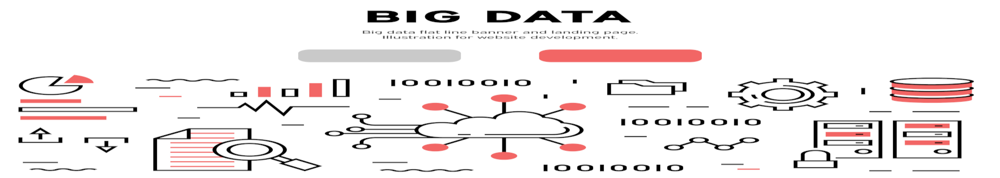

Inteligência Artificial
Fig.1 - Centralização de informações em uma maquina
A Inteligência Artificial(IA) , é uma ramo da ciência da computação que lida com desenvolvimento de sistemas que permitem as máquinas e dispositivos
desempenhe um papel independente. A IA se apresenta como uma tecnologia fundamental para transformação de todo mercado de trabalho.
A inteligencia artificial tem sua aplicação em diversos processos da tecnologia e tem como base o uso de processamento e armazenamento de dados
e tem como ideal fazer maquinas conseguirem realizar processos e tomar decisões de forma independente, com base na análise de dados e aprendizagem de maquina.
Se quiser saber mais clique aqui!
Big Data

Fig.2 - Concetração e analise de dados
O conceito de Big Data surge do crescimento e politização da tecnologia, com uma grande massa de dados gerados, principalmente dentro da internet.
Esse grande volume inicialmente foi interpretado como um problema devido a dificuldade de tratar e armazenar tantos dados, porém ele vem se tornando
base para outras tecnologias, como machine learning, pois ter essa grande quatidade de dados, junto com outras tecnologias que surgiram para analisar elas,
torna possivel analisa-los e fazer com que maquinas aprendam ainda mais e mais rápido, além de também serem usados para tomada de decisão de marketing e produtividade.
E tudo isso faz com que dados se tornem cada vez mais valiosos, principalmente para empresas que podem tomar decisões empresariais relevantes com base
nos dados de seu público alvo, e surge dai a grande busca por dados que temos atualmente. E essa busca por dados tende se tornar mais maior com o surgimento do IOT
e da grande quantidade de novos dispositivos conectados a internet.
Se quiser saber mais clique aqui!
Internet das Coisa
Fig.3 - Conectividade entre aparelhos
Internet of Things (IoT) , surge do conceito de objetos fisicos incorporados com sensores, software e outras tecnologias que o permitem se conectar e trocar dados
com outros dispositivos e sistemas conectados pela internet, dispositivos esse que podem ir de objetos domesticos a aparelhos industrias.
Dentre as tecnologias que tornaram o IOT possivel podemos citar:
Acesso a tecnologia de sensores de baixo custo e baixa potência. Sensores acessíveis e confiáveis estão possibilitando a tecnologia IoT para mais fabricantes.Conectividade. Uma série de protocolos de rede para a Internet facilitou a conexão de sensores à nuvem e a outras coisas para transferência eficiente de dados.Plataformas de computação em nuvem. O aumento da disponibilidade de plataformas em nuvem permite que empresas e consumidores acessem a infraestrutura de que precisam para aumentar a escala sem precisar gerenciar tudo.Machine learning e análise avançada. Com os avanços em machine learning e análise avançada, além do acesso a quantidades grandes e variadas de dados armazenados na nuvem, as empresas podem obter insights de maneira mais rápida e fácil. O surgimento dessas tecnologias aliadas continua a ultrapassar os limites da IoT e os dados produzidos pela IoT também alimentam essas tecnologias.Inteligência artificial (IA) conversacional. Os avanços nas redes neurais trouxeram o NLP (natural-language processing, processamento de linguagem natural) aos dispositivos de IoT (como assistentes pessoais digitais Alexa, Cortana e Siri) e os tornaram atraentes, acessíveis e viáveis para uso doméstico.
Se quiser saber mais clique aqui!
Robótica
Fig.4 - Operação de maquinas
A Robótica se da ao uso de tecnologias de circuitos e sistemas, que em conjunto constroem
robôs, que sejam capazes de cumprir tarefas e possam ser usados de maneira doméstica ou industrial.
Seu principal uso se da na automação de trabalhos repetitivos, pois ela gera uma redução de gastos, aumenta
a produtividade e diminui os erros nos processos industriais.
Embora mal vista por alguns, devido fator de substituição do trabalho humano, existe também o ideal de que com
o aumento no numero de maquinas, outros empregos surgem principalmente para dar suporte a essas maquinas, como
de reparos, sistemização do trabalho, e até manipulação no caso de maquinas com inteção fisica ou digital via IoT,
onde muitas vezes servem para afastar pessoas de tarefas perigosas e/ou monótonas.
Se quiser saber mais clique aqui!